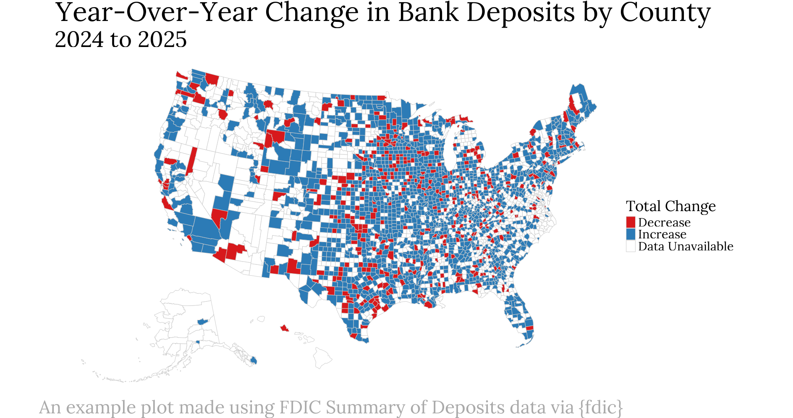

R package for retrieving data from the FDIC BankFind Suite API.

The FDIC BankFind Suite API allows you to:
- Search for specific FDIC-insured financial institutions
- Collect branch office location data
- Explore annual branch office deposit data by institution and location
- Review financial reports and other performance metrics for institutions
- Get details on failed financial institutions and structural change events
- Retrieve historic aggregate financial and structural data
- Obtain demographic data related to financial institutions
Installation
You can install the development version of {fdic} from GitHub using {pak} like so:
# install.packages("pak")
pak::pak("ketchbrookanalytics/fdic")Authentication
An API key is required to use {fdic}. Register for a free personal key at the United States Government’s Open Data Portal, which allows up to 1,000 requests per hour.
Using Your API Key
Once you have obtained your API key, we recommend setting it as the FDIC_API_KEY environment variable. Perhaps the easiest way to do this is to create an .Renviron file at the root of your project like so:
FDIC_API_KEY=QwPoVb951753Note: the above API key is an example and will not work – it must be replaced with a valid API key value.
If you prefer not to set the API key as an environment variable, you can pass it directly using the api_key argument available in each function in {fdic}.
Example
library(fdic)
# Search for the five largest active institutions by asset size in New York
# Collect the total asset amount, name of each institution, and the report date
# The `ID` column is included in all responses despite not being in `fields`
# Sort the results by total assets, descending
get_institutions(
filters = "STALP:NY AND ACTIVE:1",
fields = c("ASSET", "NAME", "REPDTE"),
sort_by = "ASSET",
descending = TRUE,
limit = 5
)
#> # A tibble: 5 × 4
#> ASSET ID NAME REPDTE
#> <int> <int> <chr> <chr>
#> 1 751776000 33124 Goldman Sachs Bank USA 03/31/2026
#> 2 467349000 639 The Bank of New York Mellon 03/31/2026
#> 3 241388000 34221 Morgan Stanley Private Bank, National Association 03/31/2026
#> 4 214201000 588 Manufacturers and Traders Trust Company 03/31/2026
#> 5 87128815 32541 Flagstar Bank, National Association 03/31/2026For a more detailed walkthrough, see vignette("fdic").
Related Projects
Inspiration for {fdic} came from several existing packages (both R and Python) that wrap the FDIC BankFind Suite API, including:
{fdic} expands on the principles of these packages to provide a consistent, flexible, and well-documented interface that uses a modern HTTP client and returns data in an easily usable format.
Need Help?
If you’re in need of assistance working with {fdic}, don’t hesitate to reach out to our team at info@ketchbrookanalytics.com.